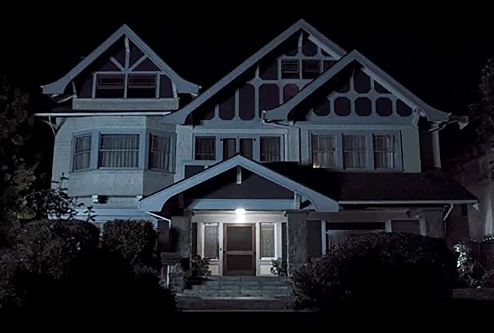
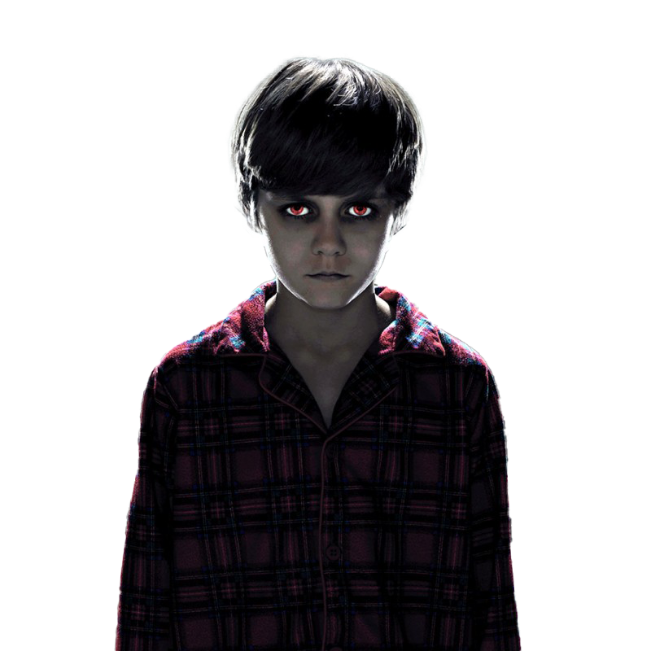

INSIDIOUS
Parents (Patrick Wilson, Rose Byrne) take drastic measures when it seems their new home is haunted and their comatose son is possessed by a malevolent entity.
 Married couple Josh and Renai Lambert have recently moved in to a new home with their sons, Dalton and Foster, and their infant daughter Kali. One evening, Dalton sneaks into the attic, where he encounters a mysterious entity after falling from a rickety ladder and hitting his head. The next day, he inexplicably slips into a coma.Three months later, with no signs of improvement, Renai and Josh take Dalton back home. The family starts to experience frightening paranormal events, including strange noises and their home security alarm going off on its own repeatedly. Foster also claims he has seen the comatose Dalton walking around the house and Renai finds a bloody handprint on Dalton's bed. Later, Renai begins seeing a fiendish, long-haired apparition that tries to attack her. The Lamberts decide to move, with Renai believing the house to be haunted.However, the supernatural activity continues in their new home when Renai sees the ghost of a young child dressed in period attire. Josh's mother Lorraine arrives and explains she had a nightmare about a demon with a red face in Dalton's bedroom. She later sees the same demon behind Josh, and Dalton's bedroom is ransacked by unseen forces. Lorraine calls psychic Elise Rainier and her paranormal investigators Specs and Tucker.In Dalton's bedroom, Elise sees a vision of the red-faced demon.